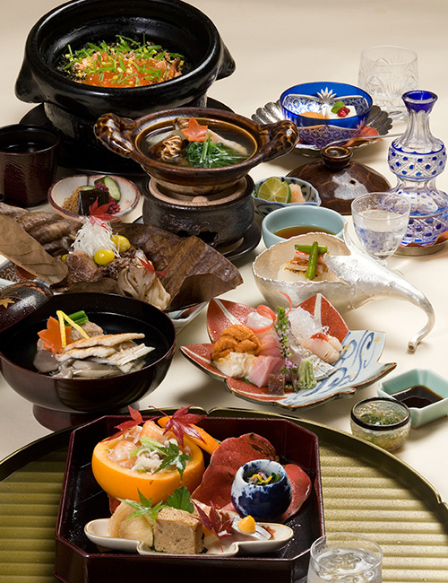
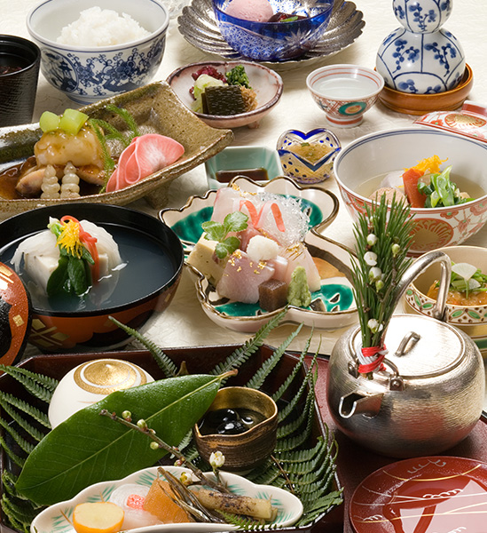
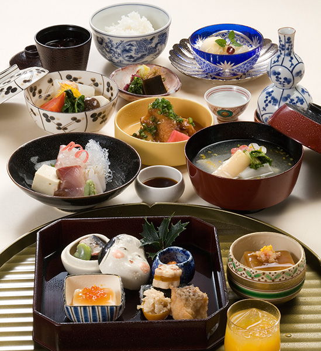
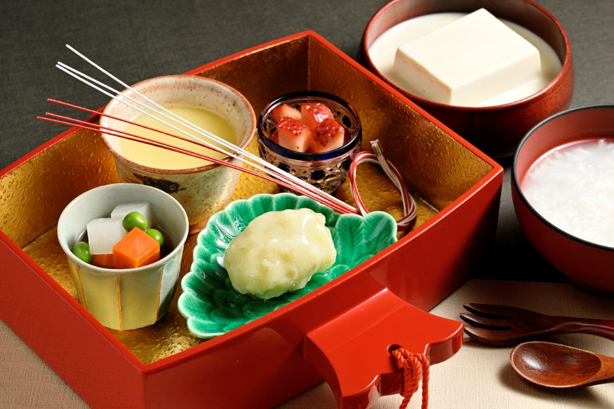

首頁
菜單
套餐
單點
飲品/甜點
關於我們
訂位預約
▲
▼
套餐
花

《套餐內容/共11道菜》
餐前酒
開胃菜
煮物
特盛時令生魚片（8種）
爐端燒牛肉
炸物
烤魚&烤食蔬
釜鍋炊飯（新瀉魚沼越光米）
漬菜
水果
甜點
價格：$5,000
月

《套餐內容/共10道菜》
餐前酒
開胃菜
煮物
大盛時令生魚片（5種）
炸物
烤魚&烤食蔬
味自慢烤飯糰
漬菜
水果
甜點
價格：$3,500
雪

《套餐內容/共10道菜》
餐前酒
開胃菜
煮物
並盛時令生魚片（3種）
炸物
烤食蔬
白飯
漬菜
水果
甜點
價格：$1,800
兒童套餐

《套餐內容/共6道菜》
馬鈴薯沙拉
茶碗蒸
芙蓉豆腐
精緻食蔬
白飯或白粥
甜點
兒童套餐 僅提供給12歲以下兒童
價格：$350
以上餐點酌收10％服務費